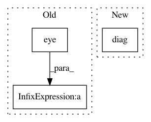

a28284b9bd72fb5f180d489327e6e5571d9aa8d8,gpflow/models/gpr.py,GPR,predict_f,#GPR#Any#Any#Any#,67
Before Change
X = self.X
y = self.Y - self.mean_function(X)
Kmn = self.kernel(X, Xnew)
S = tf.eye(X.shape[0], dtype=X.dtype) * self.likelihood.variance
Kmm = self.kernel(X)
Knn = self.kernel(Xnew, full=full_cov)
f_mean, f_var = base_conditional(Kmn, Kmm + S, Knn, y, full_cov=full_cov,
white=False) // [N, P], [N, P] or [P, N, N]
return f_mean + self.mean_function(Xnew), f_var
After Change
kmn = self.kernel(x_data, predict_at)
num_data = x_data.shape[0]
s = tf.linalg.diag(tf.fill([num_data], self.likelihood.variance))
conditional = gpflow.conditionals.base_conditional
f_mean_zero, f_var = conditional(kmn, kmm + s, knn, err, full_cov=full_cov,
white=False) // [N, P], [N, P] or [P, N, N]
In pattern: SUPERPATTERN
Frequency: 4
Non-data size: 3
Instances
Project Name: GPflow/GPflow
Commit Name: a28284b9bd72fb5f180d489327e6e5571d9aa8d8
Time: 2019-09-09
Author: art.art.v@gmail.com
File Name: gpflow/models/gpr.py
Class Name: GPR
Method Name: predict_f
Project Name: pymc-devs/pymc3
Commit Name: 21b71f1b2938d35285e375f7a5880dbcc48b2d46
Time: 2017-08-27
Author: w.j.engels@gmail.com
File Name: pymc3/gp/cov.py
Class Name: WhiteNoise
Method Name: full
Project Name: cornellius-gp/gpytorch
Commit Name: 7abe05a7678c36077b53b5fa49f9588b90aac60f
Time: 2018-11-08
Author: balandat@fb.com
File Name: test/likelihoods/test_general_multitask_gaussian_likelihood.py
Class Name: TestMultiTaskGPRegression
Method Name: test_multitask_low_rank_noise_covar
Project Name: GPflow/GPflow
Commit Name: 4a28e3ca2c21b48c9b75b99330112d14427b3a6e
Time: 2016-06-05
Author: james.hensman@gmail.com
File Name: GPflow/kernels.py
Class Name: White
Method Name: K